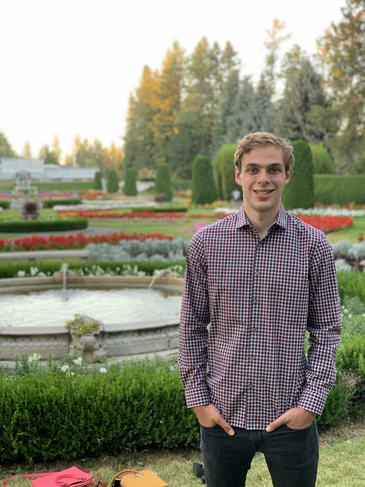

Trevor Thomas |
I think poetry is a medium for self expression that isn’t widely accepted in today’s culture,
but has the potential to be much more widely used. I hope this app will act as the spark to that potential, to ignite into an explosion of creative potential! I have experience in Java and C++. |
Zakris Pierson |
I like poetry but often find it dense and inaccessible. I see this project as narrowly answering the question: “can technology make art more accessible and interesting to people?” I am excited to work towards answering such a question! My favorite poet is George Herbet. I have some experience in Java, C++, and Dart. |